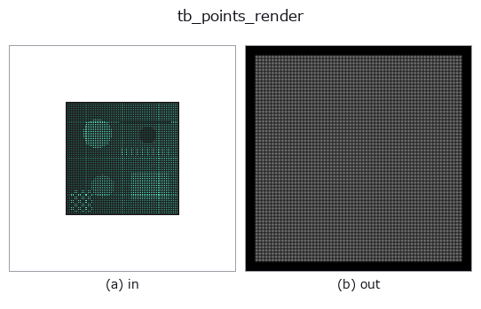

typed op• データ種: points → rgbimage
• 呼び出し: fullseye.apply(img, "tb_points_render", a=0.5, b=0.5) (2-D は 1 画像 + 2 スカラつまみ a,b∈[0,1] のモデル)
• GPU: なし(CPU 参照実装のみ)

*図は合成の入力 128×128 で実際に走らせた出力。左が入力、右が出力。点群は上から見た散布(明るさ = z)、1-D 列は折れ線、体積は z 方向の最大値投影、動画は中央フレーム、複素画像は振幅、絵にならない返り値は値そのもの。*
つまみ a を振る(0.1 / 0.5 / 0.9、もう一方は既定):
▸ tb_points_render: つまみ a を振った図 (docs サイト)
つまみ b を振る(0.1 / 0.5 / 0.9、もう一方は既定):
▸ tb_points_render: つまみ b を振った図 (docs サイト)
段階(前置きの op → この op。左から順):
▸ tb_points_render: 段階の図 (docs サイト)
別の画像でも(合成シーン / 写真 / 硬貨。上段が入力、下段がその出力。つまみは既定):
▸ tb_points_render: 別の画像での出力 (docs サイト)
(N, 3) の点群を RGB 画像 (H, W, 3) に描く: アンチエイリアスつきの足跡、深さの順、決定的。
カメラは project_points / render_point_depth と同じ OpenCV の規約:
P_cam = R @ P + t(+Z が前、u が右、v が下)。画素 (row=r, col=c) の中心が連続座標 (u, v) = (c, r)(このモジュール冒頭の画素中心の規約。0.5 を足さない)。
• projection="orthographic": u = fx·X + s·Y + cx、v = fy·Y + cy(Z は順序だけに使う)。K が None なら自動で収める: R, t を当てた後の XY の箱が、縁 margin(画像の短辺に対する割合)を残して画像に入る最大の等方倍率で、箱の中心を画像の中心 ((W-1)/2, (H-1)/2) に置く。
• projection="perspective": u = fx·X/Z + s·Y/Z + cx、v = fy·Y/Z + cy。Z ≤ 0 の点(カメラの後ろ)は描かない。透視は距離が決まらないと収められないので K が要る(None は拒否)。
足跡(footprint、半径 radius_px 画素):
• "gaussian": 重み w = exp(-d²/(2σ²))、σ = radius_px / 2(半径 = 2σ)。|Δu| か |Δv| が 4σ を超える画素は 0(円でなく軸ごとに切るので足跡は x と y の積に分かれ、加算の像の列の和は点の行の位置に依らない)。像の重心は射影位置に 1e-3 画素以内で乗る(3σ で切ると切り口の非対称で 0.017 画素ずれた。実測)。
• "disc": 半径 radius_px の円の画素被覆を 1 画素幅の線形ランプで近似 w = clip(radius_px + 0.5 - d, 0, 1)(縁が階段にならない)。小さな円は画素に量子化されるので、像の重心のずれは半径 1〜1.5 画素で最大 0.05 画素(小数画素の位置を測るなら gaussian)。
• "point": 最寄りの 1 画素だけ(round、render_point_depth と同じ画素)。
d は点の射影位置(小数画素のまま)から画素中心までの距離 —— 点を画素に丸めてから円を置くのではないので、0.3 画素ずれた点の像は 0.3 画素ずれる。
重ね方(composite):
• "over"(既定): 画素ごとに手前からアルファ合成 C = Σ c_i α_i T_i、T_i = Π_{j が手前}(1 - α_j)、α_i = opacity · w_i(足跡の重みは最大 1)、最後に (1 - Σ α_i T_i) · background。順序は深さ Zで決め、入力の並びには依らない(Z が等しい点どうしだけ入力の番号順。丸めの屑で入れ替わらないよう Z の同点は番号で決める)。opacity = 1 で足跡の中心(w = 1)に来た点は、その画素で後ろを完全に隠す(z-buffer と同じ勝ち方)。積は log を取らずに層ごとに掛けるので、不透明な点の後ろの透過率は厳密に 0。
• "add": 足跡を和が 1 に正規化して足す C = background + Σ opacity · c_i · ŵ_i。画像に収まった点については光の総量が厳密に保存される(Σ (C - background) = Σ opacity · c_i)。密度の絵で、値は 1 を超えうる(切らない。トーンは呼び手が決める)。
colors: None なら一様な明るい灰 (0.9, 0.9, 0.9)。(3,) なら全点に 1 色、(N, 3) なら点ごと。値は 0〜1。depth_cue(0〜1): 描かれる点の Z を手前 0・奥 1 に正規化した zn で、色に 1 - depth_cue · zn を掛ける(奥ほど暗い。0 で無効)。background: 背景の RGB(0〜1)。size: (H, W) か整数(正方)。
返り値: float64 の (H, W, 3)。"over" なら 0〜1 に収まる。
fail-closed(ValueError): 点が (N, 3) でない・有限でない、空の入力(points が 0 要素)、色の形か値域が違う、未知の projection / footprint / composite、radius_px ≤ 0、opacity が (0, 1] の外、depth_cue が [0, 1] の外、margin が [0, 0.5) の外、画素数が MAX_PIXELS 超、透視で K が無い、K が 3×3 でない・fx か fy が 0、点 × 足跡の組が POINTS_RENDER_MAX_PAIRS を超える。画像に 1 点も入らないのは拒否しない(背景だけの画像が正しい答え)。
後段: tonemap_reinhard / antialias、図は imgio で保存。深度だけなら render_point_depth。
2-D 進化レジストリへ橋渡しした 3d の op points_render。実装は同じで、呼び出し規約だけ op(v, a, b) に合わせてある。a が radius_px(既定 1.5)、b が opacity(既定 1)を振る。
• サンプルデータ カタログ(DL URL / ライセンス) — 2-D は skimage.data(BSD/public)+ 合成、3-D は実データ源(Stanford/PDS 等)の DL URL。
• 演算子の来歴・参考文献 — この op 族の元になった研究/手法の出典。
下のプログラムは実際に走ることを確かめてある(図と同じ入力)。Studio のヘルプではこのブロックがボタンになり、その場で読み込んで実行できる。
img_to_points 0.50 0.50 tb_points_render 0.50 0.50
次の例は元の台帳 op points_render を呼ぶもの。この橋渡し op は同じ実装を fn(v, a, b) 規約に合わせただけなので、挙動はそのまま当てはまる(呼び出し形だけ違う)。
• points_render_basics — py -3.11 examples_3d/points_render_basics.py
rgbimage を入力に取れる)identity · tb_wetness · tb_sensor_capture · tb_viewport_from_equirect · tb_specular_diffuse_split · tb_specular_coefficient_map · tb_specular_free_transform · tb_rgb_to_quaternion
typed)tb_points_to_voxel · tb_estimate_point_normals · tb_iss_keypoints · tb_project_points · tb_render_point_depth · tb_statistical_outlier_removal · tb_radius_outlier_removal · tb_voxel_grid_downsample
*Provenance: ops.py — 2D operator registry. この per-op ノートは tools/opdocs.py md が自動生成(手編集しない)。*
© 2026 Kazufumi Furuse — Fullseye operator documentation. Licensed under Apache-2.0.